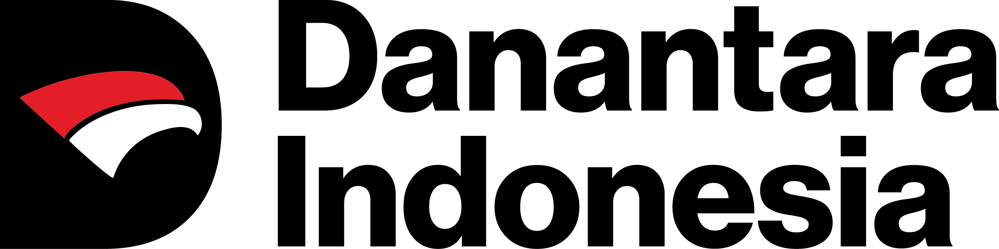
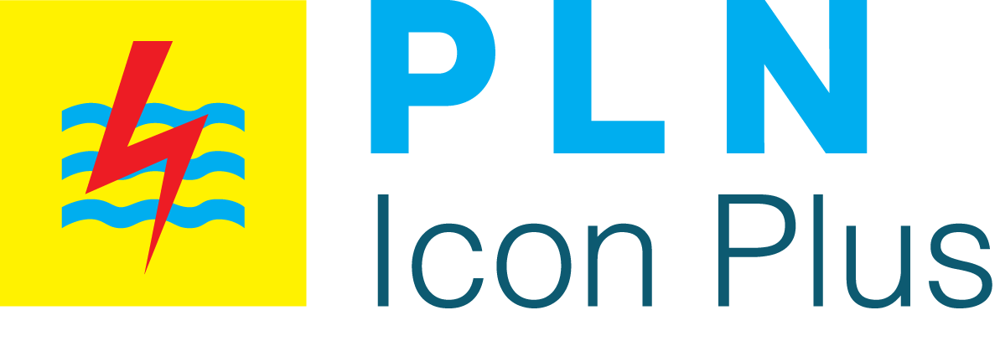
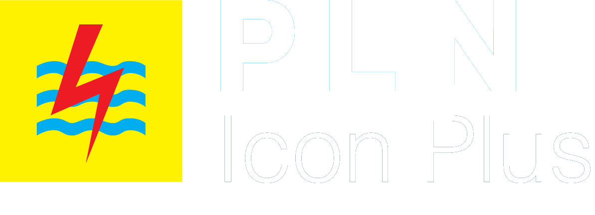

data-pln-theme="korporat"Default semua dokumen korporat · asal V1–V6



data-pln-theme="royal-emas"Deck ArcGIS, materi pengenalan, grand design · asal V7–V9data-pln-theme="teal-blueprint"Solusi teknis, arsitektur, OT/IT, transmisidata-pln-theme="navy-eksekutif"BOD/BOC, nota dinas, laporan resmi cetakdata-pln-theme="biru-digital"Produk digital, dashboard, pameran, AI/dataSwatch: primary · strong · dark/secondary · flow · highlight · tint. Tetap di semua tema: Ink #0A1233, teks-2 #5C6474, putih, status Hijau/Oranye/Merah, dan kedua logo. Tanpa atribut tema = warna asli template (asli). Huruf terpisah: data-pln-font="arial" | "arial-calibri".